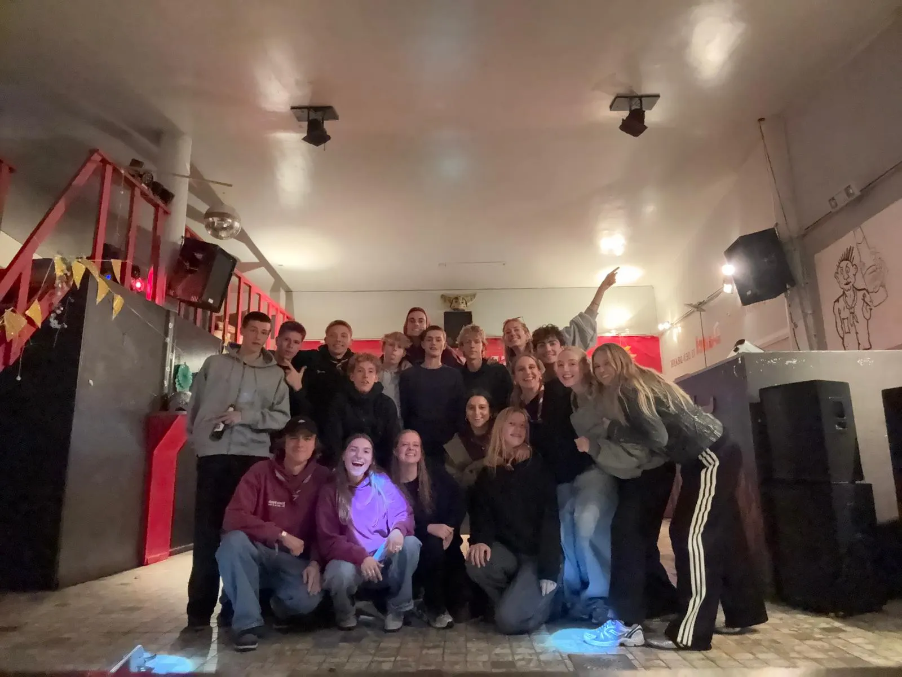
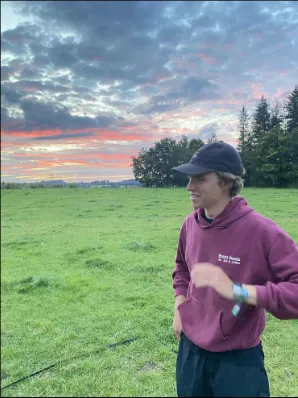
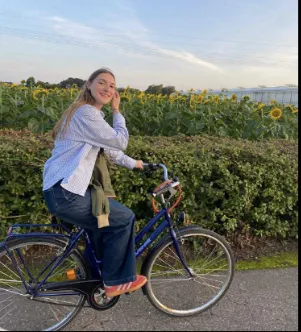
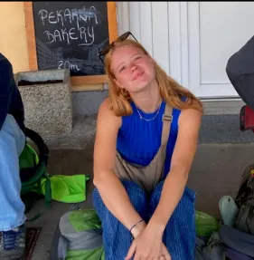
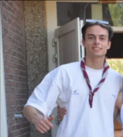

Jins
Het laatste jaar. Samen werken voor een droomreis en voorbereiden op leiding worden. De kroon op je scoutscarriere.
Het mooiste afscheid is een nieuw begin.
De Jins (zesde middelbaar, gemengd) zijn het sluitstuk van je scoutscarriere als lid. Dit jaar draait om samenwerken aan een groot gemeenschappelijk project: jullie droomreis.
Van geld inzamelen tot de reis zelf plannen en organiseren — de Jins leren wat het betekent om als team een ambitieus doel te bereiken. Tegelijk bereiden ze zich voor op hun volgende rol: leiding worden en de fakkel doorgeven aan de volgende generatie scouts.
Onze Leiding
Het enthousiaste team dat de Jins begeleidt.

Jarne Versonnen
0468 28 35 01
Fleur Van Nuffelen
0493 70 33 28
Joske Leurentop
0492 53 35 13
Adriaan Heulens
0471 27 19 88Klaar voor je laatste grote avontuur?
Neem contact op voor meer info over de Jins of om je aan te melden.